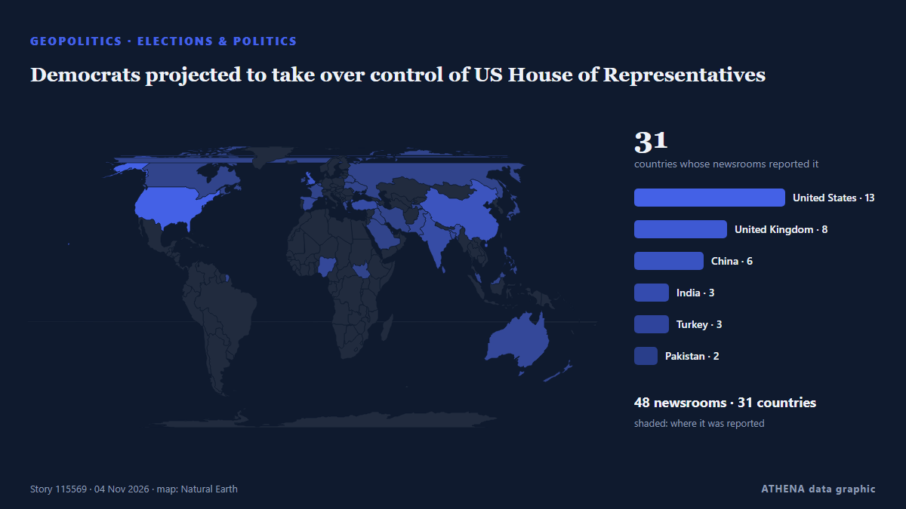

ATHENA Glaux Intelligences — Παγκόσμια ειδησεογραφική ανάλυση — κάθε αριθμός εξηγημένος
Οι ειδήσεις του κόσμου, διασταυρωμένες ανάμεσα σε χώρες
Το ATHENA Glaux παρακολουθεί εκατοντάδες ειδησεογραφικά μέσα σε όλο τον κόσμο και ομαδοποιεί τις αναφορές τους σε γεγονότα. Για κάθε γεγονός βλέπετε πόσα μέσα σε πόσες χώρες το ανέφεραν, ποιος ήταν πρώτος και έναν βαθμό κινδύνου με τους λόγους του — με ενημέρωση κάθε 10 λεπτά, σε επτά γλώσσες.
Ζωντανά από τις ειδήσειςDemocrats projected to take over control of US House of Representatives48 μέσα · 31 χώρες · Κίνδυνος 3.3 · Πηγές: Lawfare, The Hollywood Reporter

ΓεωπολιτικήDemocrats projected to take over control of US House of Representatives
Control of the House depends on which party reaches the 218 seats necessary, while the Senate requires 51 for Democrats or 50 for Republicans because of Vice President JD Vance's tiebreaking vote. από PBS NewsHour
Οι τίτλοι των ειδήσεων παρουσιάζονται στα αγγλικά, όπως δημοσιεύτηκαν.
US strikes Iran’s Qeshm island – Report
The US has not publicly announced the attacks, so as not to signal any intention of resuming major combat operations, the Wall Street Journal reported. από CNA (Channel NewsAsia)
Trump says US will end military aid to Israel by end of the year
Says democrats, left-wing politicians using US financial support to Israel as a talking point to criticise Republicans. από Express Tribune

Η σημερινή εικόνα
| 04:00 | 307 |
|---|---|
| 05:00 | 422 |
| 06:00 | 537 |
| 07:00 | 788 |
| 08:00 | 934 |
| 09:00 | 707 |
| 10:00 | 836 |
| 11:00 | 996 |
| 12:00 | 595 |
| 13:00 | 776 |
| 14:00 | 922 |
| 15:00 | 902 |
| 16:00 | 927 |
| 17:00 | 601 |
| 18:00 | 835 |
| 19:00 | 372 |
| 20:00 | 266 |
| 21:00 | 498 |
| 22:00 | 777 |
| 23:00 | 332 |
| 00:00 | 638 |
| 01:00 | 326 |
| 02:00 | 342 |
| 03:00 | 453 |
Κίνδυνος των σημερινών γεγονότων
First polls close in closely watched U.S. midterm elections
The US midterm elections next month could change the course of American politics at home and – and American policy abroad. από The National
Democrats capture Congress in sweeping setback for Trump
Democrats captured majorities in both the Senate and House on Tuesday, scoring sweeping victories that reached deep into Republican strongholds as tens of millions of voters delivered a scathing… από The Korea Times
Με την ευρύτερη κάλυψη
Αναδυόμενα σήματα
- Απότομη αύξηση · Ενεργό τώραEuropean Commission
- Απότομη αύξηση · Ενεργό τώραUS Congress
- Απότομη αύξηση · Ενεργό τώραSenate and House
- Απότομη αύξηση · Ενεργό τώραTrump. Democrats
- Απότομη αύξηση · Ενεργό τώραSenate and House of Representatives
Επίσημες προειδοποιήσεις
- Red notification for tropical cyclone FOUR-26. Population affected by Category 1 (120 km/h) wind speeds or higher is 1.156 million .Red · GDACS ·
- Cyber chief: UK facing AI-powered attacks on critical infrastructure within two yearsadvisory · UK National Cyber Security Centre ·
- M 6.0 - 165 km NW of Port-Olry, VanuatuM6.0 · USGS ·
- M 6.2 - 43 km ESE of Port-Olry, VanuatuM6.2 · USGS ·
Το ATHENA στο Telegram
Μπείτε δωρεάν στην ομάδα ATHENA Glaux και λάβετε τις ειδήσεις τη στιγμή που δημοσιεύονται εδώ:
- έκτακτα γεγονότα με κίνδυνο 6 ή περισσότερο
- ωριαία σύνοψη των κορυφαίων γεγονότων
- ενημερώσεις των παρακολουθήσεων κινδύνου (Ορμούζ, Ερυθρά Θάλασσα, Ταϊβάν, κυρώσεις κ.ά.)
- την ημερήσια ενημέρωση κάθε πρωί στις 10:00 (ώρα Ελλάδας)
- εβδομαδιαία προοπτική
- επίσημες προειδοποιήσεις, αναδυόμενα σήματα και κινδύνους σε άνοδο
Πατήστε το κουμπί, ανοίγει το Telegram, πατήστε «Join». Οι αναρτήσεις είναι στα αγγλικά· μπορείτε να τη σιγάσετε ή να αποχωρήσετε όποτε θέλετε. Δεν έχετε Telegram; Είναι δωρεάν στο telegram.org.
Παρακολούθηση κινδύνων
Περισσότερα ›Παγκόσμιοι κίνδυνοι — εβδομάδα 45, 2026 (2–8 Νοε) ›
Γεωπολιτική, Πολιτική & Ασφάλεια
Περισσότερα ›Voting ends in South Africa's hotly contested local elections
Special voting gets underway on Monday and will continue on Tuesday. από SABC News
- Εκλογές & πολιτική
Top takeaways from the US midterm elections
- Εκλογές & πολιτική
Trump says Hegseth doing 'a very good job' as questions swirl about his future
- Εκλογές & πολιτική
Democratic leader Hakeem Jeffries announces bid for US House speaker
- Εκλογές & πολιτική
Democrats take House and Senate from Republicans in US midterm rout
Οικονομία, Χρηματοοικονομικά & Αγορές
Περισσότερα ›Bank of England set to hike interest rates to 4% to tackle rising inflation
Rate-setters are widely expected to tighten monetary policy in a bid to tackle rising inflation in the UK economy. από The Irish News (Belfast)
- Τράπεζες & πίστη
Paraguay opposition seeks president’s removal over banking crisis
- Τράπεζες & πίστη
French blood banks hit alongside cyberattack on European supermarkets
- Μετοχές, ομόλογα & αγορές
US midterms live: Stocks climb as Democrats take control of Congress
- Τράπεζες & πίστη
French bank Credit Mutuel Arkea counting losses from cyberattack
Εμπόριο, Βιομηχανία & Υποδομές
Περισσότερα ›NAVTOR introduces real-time AIS streaming in NavFleet platform
Maritime technology company NAVTOR has introduced real-time AIS streaming to its NavFleet platform, allowing fleet managers to monitor vessel positions, movements and surrounding traffic with minimal… από MarineLink
- Εμπόριο & εμπορικές συμφωνίες
King stops short of offering formal apology over transatlantic slave trade
- Αερομεταφορές, σιδηρόδρομος & οδικές
Indian injured in attack on Saudi airport dies, total West Asia toll now 24
- Γεωργία & επισιτιστική ασφάλεια
Kellogg’s removes rice grains from Rice Krispies due to ‘changing weather’
- Αερομεταφορές, σιδηρόδρομος & οδικές
International News: Haiti police find burned vehicle used by missing Salvadoran technicians
Ενέργεια, Πόροι & Περιβάλλον
Περισσότερα ›Borr Drilling Prospector 5 Rig Incident Update
Borr Drilling Limited provides an update on the Prospector 5 incident offshore Gabon, first announced by the Company on October. από Cyprus Shipping News
- Ρύπανση & βιοποικιλότητα
Mother, daughter dead in suspected grizzly bear attack in Canada
- Ρύπανση & βιοποικιλότητα
Singapore to toughen haze law with arrest powers, bigger fines
- Κλίμα & κλιματική πολιτική
Six measures could save 1.6m lives a year: WHO
- Πετρέλαιο & φυσικό αέριο
Billionaire industrialist Dangote launches $2.5 billion Namibia fuel storage project
Τεχνολογία, ΤΝ & Κυβερνοασφάλεια
Περισσότερα ›Google turns off AI for schoolchildren by default
Google has said it will switch off its AI tools for schoolchildren by default, after drawing criticism for pushing artificial intelligence features to students while schools are still debating how… από Vanguard
- Διάστημα & δορυφόροι
Nasa's Swift satellite telescope heads for fiery re-entry 22 years after launch
- Διάστημα & δορυφόροι
SpaceX is working with Qualcomm to build its Starlink Mobile 5G network
- Διάστημα & δορυφόροι
Musk’s Tesla, SpaceX slide as Democrats take control of Congress
- Επεξεργαστές & υπολογιστική
Qualcomm’s smartphone chip sales miss estimates, shares fall
Επιχειρήσεις, Εταιρείες & Επενδύσεις
Περισσότερα ›Australia’s 188-year-old retailer David Jones faces sale
The department store was placed into voluntary administration as rising costs, sluggish retail sales and supply chain pressures weighed on its business. από Free Malaysia Today
- Κλάδοι & εταιρικοί κίνδυνοι
The World's Mayors Encounter Dynamic Ningbo
- Εταιρική στρατηγική
AD Ports Group appoints Afif Saif Al Yafei as new CEO
- Συγχωνεύσεις & εξαγορές
TotalEnergies to Take Operatorship of Two Major Gas Fields off Malaysia
- Εταιρική στρατηγική
3M Commits $7.35 Billion to Settle PFAS-Related Claims
Υγεία, Επιστήμη & Έρευνα
Περισσότερα ›Rare Particle Decay Could Reveal New Physics
After more than 40 years of searching, scientists at CERN have found evidence of an exceptionally rare particle decay, offering a new way to investigate the universe’s most fundamental building… από News of Bahrain
- Φάρμακα & βιοτεχνολογία
Ground cinnamon recalled in 14 states because of elevated lead levels
- Επιστημονικά επιτεύγματα
Democrats take House and Senate from Republicans in US midterm rout
- Επιδημίες & δημόσια υγεία
Ex-Prince Andrew called to testify in civil case, 1st royal in 156 years to get witness summons
- Διάστημα & φυσική
NASA Swift telescope plummets to Earth near Indonesia
Κοινωνία, Δίκαιο & Δημόσια Πολιτική
Περισσότερα ›Hong Kong activist Joshua Wong to be sentenced for collusion
The global face of Hong Kong's pro-democracy movement could be put behind bars for life under the city's national security law. από Free Malaysia Today
- Δικαιοσύνη
Top UN court to rule Nov 19 on Myanmar/Rohingya genocide case
- Εγκλήματα & διαφθορά
Bavarian politician Hubert Aiwanger found dead in Berlin hotel
- Καταναλωτές & κοινωνία
Reddit calls Australia’s under-16 social media ban ‘inept’ in court
- Εγκλήματα & διαφθορά
Harry and Meghan to make first public appearance since Thomas Markle allegations
Αθλητισμός
Περισσότερα ›Goalkeeper Owono says ‘hardest days of my life’ after De Miguel death
FC Andorra goalkeeper Jesus Owono is grieving after a collision on the field led to the tragic death of Tenerife striker Jesus de Miguel. από Arab News
- Ποδόσφαιρο
Valverde late strike seals Real Madrid 3-2 win at AEK
- Ποδόσφαιρο
Fenerbahce 3 Liverpool 2 LIVE - Andoni Iraola and Kostas Tsimikas react as Reds suffer first Champions League loss
- Ποδόσφαιρο
Nigeria beat Brazil to reach first-ever women U-17 World Cup final
- Ποδόσφαιρο
Como equal Champions League record with stunning 9-1 win at Lens
Πολιτισμός, Πρόσωπα & Τρόπος ζωής
Περισσότερα ›Disney’s Pixar names Jonathan Garson president as Jim Morris steps back
Jonathan Garson, most recently Pixar’s general manager, has been with the studio since 2010 and Disney for more than 30 years. από Free Malaysia Today
- Τέχνες, βιβλία & κληρονομιά
Book about Alexander the Great wins Baillie Gifford Prize for non-fiction
- Μουσική
Bob Dylan meets Pope Leo at the Vatican
- Κινηματογράφος & τηλεόραση
'Godzilla Minus Zero2 gets loud applause at Tokyo film festival
- Βασιλικοί οίκοι & πρόσωπα
John Frieda's iconic Frizz Ease range made him a household name - here's the product that started it all